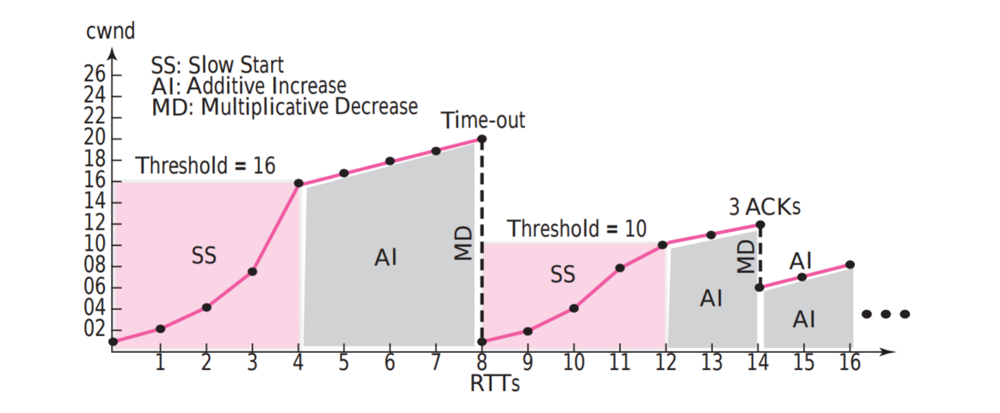

生产环境遇到些网络问题，知对 TCP 协议还是有些生疏，在此复习记录。
协议
报文段格式
TCP 协议报文段主要由首部（Header） 与数据（Data） 两部分组成。在计算校验和是还会加上虚拟的伪首部。此处主要说明首部的组成。

TCP 在网络模型中属于运输层，用于提供进程与进程间的字节流通信服务，因此需要源 / 目端口（Source / Destination port） 以确定通信双方进程。使用序号（Sequence number，seq） 表明本报文段第一个数据字节的编号，初始序号由双方在 TCP 连接建立时随机生成。使用确认号（Acknowledgment number，ack） 表示接受方期望从发送方接受的字节编号。数据偏移量（Data Offset） 顾名思义报文段数据开始字节处的偏移量，即 TCP header 的长度，由于选项的存在，首部长度的范围是 20～60 Bytes，但是该字段只有 4 Bits，因此该字段指出首部长度有多少个 4 Bytes。接下来的 3 Bits 被保留（Reserved） 。随后会讨论 9 个标志位（Flags）。窗口大小（Window Size） 定义了接受方的接受窗口大小，由接受方决定，然后告知发送方。在计算校验和（Checksum） 时需要加上伪首部，伪首部的内容包括源目 IP 地址，TCP 报文段长度等。如果 URG 标志位被设定了，那紧急指针（Urgent pointer） 用于指示紧急数据最后一个字节在报文段数据部分中的偏移量。最后的 40 Bytes 留给选项（Options）。
Flags
- URG：为 1 表示数据中有紧急数据。这个标记比较少见，可以找到的一些应用有：FTP，Telnet；
- ACK：为 1 表示确认号字段有效；
- PSH：为 1 表示有推送数据，这个字段主要完成两个功能：发送方应用层提醒 TCP 需要立即发送数据；接受方 TCP 需要将收到的数据立即提交给应用层；
- RST：为 1 表示出现严重差错。可能需要重现创建 TCP 连接。还可以用于拒绝非法的报文段和拒绝连接请求；
- SYN：为 1 表示这是连接请求或是连接接受请求，用于创建连接和使顺序号同步；
- FIN：为 1 表示发送方没有数据要传输了，要求释放连接；
阶段
TCP 连接可以分为三个阶段：建立连接，传输数据，终止连接。可以用一个有限状态机表示：

下面结合一个用 Rust 写的 Echo Server 与抓包工具 Wireshark 来演示这三个过程。代码如下：
1 | use std::net::{TcpListener, TcpStream}; |
Echo Server 启动之后使用 telnet 工具连接至服务器，与服务器交互两次，即回显两次字符串，然后从退出 telnet。抓到的包截图如下：

在下面的表述中，客户端表示在这一阶段先发起请求的一方，服务端表示在这一阶段先接受请求的一方。在 TCP 中，服务端和客户端之间可以进行双向通信，他们可以理解为对等的，在连接建立后，实际上没有服务端和客户端的区别。
建立连接
前三个包代表了建立连接的过程，分为三步，大多数情况下就如同抓包所示，称为三次握手（3-way handshake）。图 2 中还画出了双方同时打开连接与连接复位这两种比较少见的情景。
- 客户端发送给服务端一个 SYN 报文，用以告知服务端初始序号为 0（此处的 Seq 经过 Wireshark 的处理，变成了相对值），然后客户端进入 SYN_SENT 状态。
- 服务器收到 1 中报文后，发给客户端一个 SYN + ACK 报文，告知客户端初始序号为 0，且接下来期望从客户端收到的序号 Ack 为 1。服务端进入 SYN_RCVD 状态。可见 SYN 报文消耗了一个序号。
- 客户端给服务端回复 ACK 报文，进入 ESTABLISHED 状态，服务端在收到这个报文连接建立完成。可见 ACK 报文在不携带数据的情况下不消耗序号。
传输数据
图 3 中 P17～P20 与 P72～P74 分别展示了两次交互过程。以第二次交互为例：
- P72 中，客户端将想要回显字符串发送给服务端，告知服务器这个报文段的数据首字节序号为 8，并且希望从服务端收到的下一个序号是 8。
- 服务端将回显的字符串与对 P72 的确认一起发送给客户端。P72 的长度为 9，因此报文段中数据的序号范围为 [8,17)，因此在 P73 中 Ack 为 17。
- 客户端确认 P73。
需要注意的是，这两次交互有所区别：第一次交互时，服务端先返回了一个确认给客户端，然后再额外发送一条携带回显内容的报文段。但是第二次交互时省略了单独的确认。
终止连接
根据“广大博主”写作的文章与问答网站的讨论以及各种面经，基本一致认为，终止连接通常被成为四次挥手（4-way termination），即通信双方会有四次交互，但是如图 2 所示，也存在三次挥手的可能性，且我本地的多次抓包也如图 3 一致——均为三次挥手，且无一例外。下面对四次挥手进行分析，三次挥手可以被其概括：
- 客户端发起终止连接，发出一个 FIN 报文给服务端，假设该报文的 Seq 为 X，Ack 为 Y。然后客户端进入 FIN_WAIT1 状态，除重传 FIN 报文与发送 ACK 确认之外，不再发送应用数据给服务端。
- 服务端收到 FIN 报文段后先回复一个 ACK 报文，进入 CLOSE_WAIT 状态，该报文的 Seq 为 Y，Ack 为 X+1。
- 客户端在收到 FIN 的 ACK 之后进入 FIN_WAIT2 状态。此时服务端还可以继续将未发送完的应用数据发送给客户端。
- 服务端发送完数据后发送一条 FIN 报文，进入 LAST_ACK 状态，该报文的 Seq 为 Y+K，Ack 为 X+1。
- 客户端收到服务端的 FIN 后，发送最后的 ACK 报文给服务器，然后进入 TIME_WAIT 状态。如果在 2MSL（最大报文段寿命，通常为30～60s）后客户端没再次收到 FIN 报文，则进入 CLOSED 状态，否则重发 ACK 报文进行重试。
- 服务端在收到 ACK 报文后进入 CLOSED 状态。
三次挥手表现为步骤 2～4 合并为一步，即同时发送对客户端 FIN 的 ACK 报文与 服务端自己的 FIN 报文。这条 FIN+ACK 报文的 Seq 为 Y，Ack 为 X+1。
至于在什么情景下出现三次握手或者四次握手，大多数的观点认为先收到 FIN 报文的一方还需要向上层应用询问是否仍然有数据需要发送，因为要等待上层的回复，所以“为何不早点把对 FIN 的 ACK 发出去呢？！”而且立即 Ack 能防止对方重传 FIN。但是有没有存在不需要询问上层或者不需要立即回复 Ack 的可能，就如同传输数据出现的情况一样，这些应该与 TCP 的具体实现相关，目前能力与精力有限，还有待对 Linux TCP 实现源码进行阅读。
滑动窗口
滑动窗口是 TCP 中用于实现诸如 ACK 确认、流量控制、拥塞控制的承载结构。如图所示:

先将 TCP 看作是简单的单向通信，则发送方有一个发送窗口，接收方有一个接收窗口。正如图中所示，传输的是报文段，窗口大小的单位是字节。两个窗口中白色区域为空白位置，等待被应用层或者网络层填满；灰色区域是已经发送但是还没有接受到确认的字节；粉色区域在发送窗口中表示等待被发送的字节，在接收窗口汇总表示等待交付的字节。
发送窗口的大小为接受方通过首部中窗口大小字段告知的接收窗口大小 rwnd 和之后会讲到的拥塞窗口的大小 cwnd 两者中的较小值，即 min(rwnd , cwnd)。接收窗口大小是接收方可用缓存空间大小，为 rwnd = 缓存大小 - 准备交付的字节数。
流量控制
流量控制用于平衡生产者产生数据与消费者消耗数据的速度。TCP 中的流量控制实现的主要途径是不断调整发送窗口的大小实现。发送 TCP 一旦发现发送发送窗口满了就会对发送进程进行反馈。接受方根据之前从发送方收到的数据量和服务器已经消耗的数据量得到自身接收窗口的大小，将这个值告知发送方，发送方根据收到的窗口大小调整自身窗口大小。
还有正对通信双方产生数据小或者消费数据慢产生糊涂窗口综合征时，有其他方面的流量控制。当发送方数据量相对于首部小很多的报文很多时，可以使用 Nagle 算法减少这种小报文量。当接受方消耗数据很慢时，每次告知发送方的窗口大小会比较小，也可能产生很多小报文，此时可以使用 Clark 解决方法或者进行推迟确认。关于这几种方案的分析及具体的使用情景可以参考 dog520 大神的这篇文章——再次谈谈 TCP 的 Nagle 算法与 TCP_CORK 选项。
差错控制
差错控制用于描述 TCP 在发送或者接受到报文段发生异常时的行为，其主要表现在如下几个方面：
- 校验和：在接受方，如果收到的报文段未通过校验和校验，则立即丢弃，反之，则通过确认规则（下面马上提及）进行确认；
- 重传：在发送方，如果一个报文段重传超时计时器（RTO）超时，即在 RTO 时间之后仍然未收到 ACK，则立即重传未被确认的最小的报文段；如果收到四个相同的的 ACK ，则立即重传下一个报文段；
确认规则
- 当接受方向发送方发送数据报文段时，必须捎带 ACK；
- 当接受方没有数据要发送时，但是收到一个按序到达的报文，同时前一个报文段也已经确认过了，那么接收方就推迟发送确认报文段，直到另一个报文段到达或者延迟一段时间以减少 ACK 报文量；
- 当所期望的报文段到达，且前一个按序到达的报文还未被确认，则立即 ACK（ACK 的序号仍然是下一个正常期望的序号，下同）；
- 当序号比期望的大的报文段（失序报文段）到达，则立即 ACK，且存储该报文段；
- 当丢失的报文段到达时，则立即 ACK；
- 当重复的报文段到达时，则丢弃，且立即 ACK；
拥塞控制
拥塞控制是为了避免因为网络受限导致网络不能按照发送方产生的数据的速度将报文段交付给接受方。与流量控制考察的对象是通信双方不同，拥塞控制的考察对象是通信双方间的网络。拥塞控制的方式表现在发送方的拥塞窗口的变化，从而控制发送方的数据发送快慢。TCP 最初使用的拥塞策略称为 TCP Tahoe and Reno。
Tahoe and Reno
这个拥塞策略主要分为慢启动、拥塞避免、拥塞检测三个阶段。
慢启动
假设接收窗口大小远大于拥塞窗口，且不考虑延迟确认。拥塞窗口大小从一个最大报文长度 MSS （连接建立时通过 TCP 选项告知）开始，之后每当有一个报文段被确认，拥塞窗口就增大一个 MSS。在这样的策略下，慢启动阶段的拥塞窗口大小呈指数增长。即从 1 -> 2 -> 4 -> 8。当到达慢启动门限时，就进入拥塞避免阶段。
拥塞避免
拥塞避免阶段拥塞窗口大小继续增加，但是速度放慢，改成当整个窗口大小的报文段都被确认后，窗口大小才增加一个 MSS。表现为 8 -> 9 -> 10 -> 11，呈现线性增长。
拥塞检测
如果拥塞发生了，因为发生在网络中路由器出现丢包现象，在接受方处的表现为出现以下两种情况，并做出对应的反应：
-
RTO 计时器超时。这说明网络拥塞的可能性较大，TCP 做出较强烈的反应：
a. 把慢启动门限值调整为当前窗口大小的一半；
b. 把 cwnd 重新设置为 1 MSS；
c. 重新进入慢启动阶段； -
收到四个相同的 ACK；说明出现拥塞的可能性较小，但是出现了丢包，TCP 做出较弱的反应，Reno 算法表现为快恢复（Fast recovery）：
a. 把慢启动门限值调整为当前窗口大小的一半；
b. 把 cwnd 重新设置为慢启动门限值；
c. 重新进入拥塞避免阶段；
图示如下：

Tahoe 算法与 Reno （Tahoe 的改进版本）的区别在于收到四个相同 ACK 时，Tahoe 算法的策略和 RTO 计时器超时时一致。
其他拥塞策略
拥塞控制策略只需要在发送方实现即可，不需要接受方的参与，因此可以仅在发送方部署一套算法。现在 TCP 网络上的算法也在不断改进，涌现出诸如 TCP CUBIC、TCP BBR 这样的算法。
TCP 中的计时器
重传计时器
重传计时器的超时时间为 RTO，RTO 主要根据测量所得的报文段往返时间 RTTm计算而来，计算过程如下：
首先计算平滑 RTT，即RTTs：
1 | RTTs = RTTm // 第一次测量 |
然后计算 RTT 的偏差 RTTd：
1 | RTTd = RTTm / 2 // 第一次测量 |
重传超时 RTO 的计算如下：
1 | RTO = 6s // 原始值 |
任意时刻只有一个 RTT 在进行测量，当重传发生时会影响 RTT 的测量，根据 Karn 算法，TCP 忽略重传报文的 RTT，而对于重传的报文，RTO 值为原报文的两倍，如果发生第二次重传，则为四倍，以此类推。
持续计时器
当接受方发送窗口值为 0 的报文段之后，后来因为接收窗口增加需要通告接窗口为非 0，但是通告的 ACK 丢失，这会导致发送方一直等待非 0 窗口通告，导致死锁。持续计时器就是接受方在收到 0 窗口通告后启用，如果超时则发送探测报文，促使接受方重传 ACK。
Keep-Alive 计时器
Keep-Alive 计时器用于防止 TCP 连接长时间空闲，每当收到对方的报文段，这个计时器就复位。这个计时器的超时时间通常可以通过接口进行设定。
Time-Wait 计时器
Time-Wait 计时器对最后的 FIN 进行确认时启动的超时计时器。如果在时常为 2MSL 的计时器超时前再次收到 FIN，则重传 ACK，否则连接彻底关闭。
传输层的未来
QIUC 了解一下下？